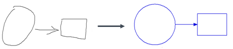

MyScript Shape can recognize a fixed set of hand drawn shapes and lines.

A shape is related to one or more primitives. A primitive is the basic geometrical unit of a shape. It is either a line segment, an arc, or a decorated line or arc, in the case of arrow heads. Each type of shape recognized can be described by one or more of these basic primitives. For example, a rectangle is made up of 4 line segments, a circle is a type of arc, etc.
The recognizer will send you a result describing the type of shape, the primitives that constitute it and information on the shape's orientation, size etc., so that it can be reconstituted geometrically. The resulting shape will be "beautified" to give a visually attractive geometrical shape as close as possible to the original. For example, roughly parallel lines will be made perfectly parallel, shapes that are almost touching will be connected and so on.
The below example shows a shape recognition request where the following are to be specified:
<script>
var canvas = document.getElementById("shape-canvas");
var context = canvas.getContext("2d");
var pointerId;
var url = 'http://cloud.myscript.com/api/v3.0/recognition/rest';
var applicationKey = 'xxxxxxxx-xxxx-xxxx-xxxx-xxxxxxxxxxxx';
var hmacKey = 'xxxxxxxx-xxxx-xxxx-xxxx-xxxxxxxxxxxx';
var stroker = new MyScript.Stroker();
var shapeRenderer = new MyScript.ShapeRenderer();
var shapeRecognizer = new MyScript.ShapeRecognizer(url);
var instanceId;
function doRecognition () {
shapeRecognizer.doSimpleRecognition(applicationKey, instanceId, stroker.getStrokes(), hmacKey).then(
function (data) {
if (!instanceId) {
instanceId = data.getInstanceId();
} else if (instanceId !== data.getInstanceId()) {
return;
}
shapeRenderer.clear(context);
shapeRenderer.drawRecognitionResult(stroker.getStrokes(), data.getShapeDocument(), context);
}
)
}
function onPointerDown (event, x, y) {
shapeRenderer.drawStart(event, x, y);
stroker.startStrokeWriting(x, y);
}
function onPointerMove (event, x, y) {
shapeRenderer.drawContinue(event, x, y, context);
stroker.continueStrokeWriting(x, y);
}
function onPointerUp (event, x, y) {
shapeRenderer.drawEnd(event, x, y, context);
stroker.endStrokeWriting(event);
if (!stroker.isEmpty()) {
doRecognition();
}
}
/**
* Firefox missing offsetX and offsetY properties hack
* @param event
* @returns {{x: number, y: number}}
*/
function getOffset (event) {
var element = event.target;
var offset = {x: 0, y: 0};
while (element.offsetParent) {
offset.x += element.offsetLeft;
offset.y += element.offsetTop;
element = element.offsetParent;
}
offset.x = event.pageX - offset.x;
offset.y = event.pageY - offset.y;
return offset;
}
function getX (event) {
if (event.offsetX) {
return event.offsetX;
}
return getOffset(event).x;
}
function getY (event) {
if (event.offsetY) {
return event.offsetY;
}
return getOffset(event).y;
}
canvas.addEventListener('mousedown', function (event) {
if (!pointerId) {
pointerId = event.pointerId;
onPointerDown(event, getX(event), getY(event));
}
}, false);
canvas.addEventListener('mousemove', function (event) {
if (pointerId === event.pointerId) {
onPointerMove(event, getX(event), getY(event));
}
}, false);
canvas.addEventListener('mouseup', function (event) {
if (pointerId === event.pointerId) {
onPointerUp(event, getX(event), getY(event));
pointerId = undefined;
}
}, false);
canvas.addEventListener('mouseleave', function (event) {
if (pointerId === event.pointerId) {
onPointerUp(event, getX(event), getY(event));
pointerId = undefined;
}
}, false);
</script>A list of limitations for shape recognition can be found in the appendix.
See the reference guide for information on the mandatory and optional parameters needed for shape recognition.
You may obtain a shape result for "junk". This represents ink that cannot be recognized as a shape. The result will return a "junk" label and return the strokes involved.

The shape recognizer uses resources describing a set of recognizable shapes, and components defining each type of shape.
The shape recognizer sends back components in a beautified form (if requested: see "doBeautification"), describing the shape's type, which curves and line segments it uses, as well as their size and position. That way, you can reconstitute the shape as a vector object.